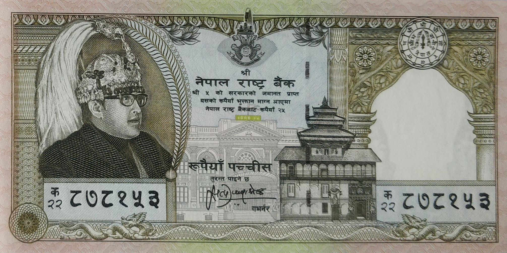
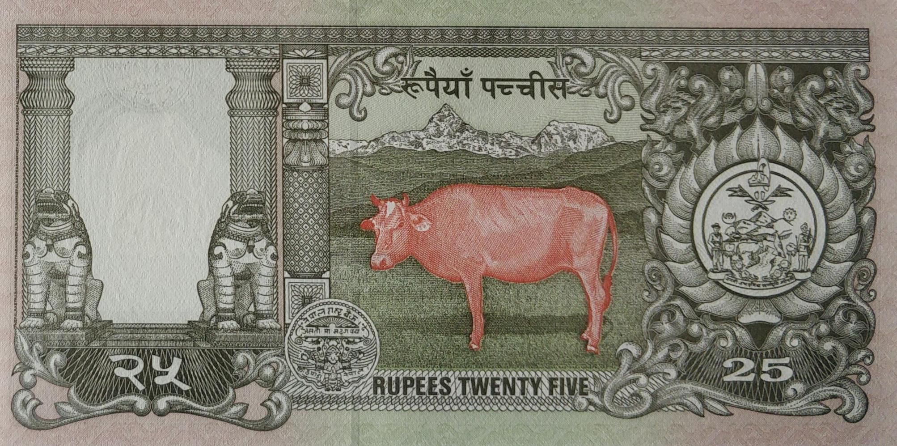

Home
About
Nepalese Paper Money
Nepalese Coins
Note of twenty-five rupees issued during King Birendra's rule
 
Satyendra Pyara Shrestha (Jan 18, 1995 to Jan 17, 2000)
Facts:
Domination:
Rupees 25
Signature:
10-Satyendra Pyara Shrestha
Printer:
Giesecke & Devrient GMBH, Germany
Issued date:
April 11, 1997
Front:
Portrait of King Birendra, Hanumandhoka Palace & Parliament building
Back:
A cow on the fields and the Mt. Machhapuchre on the background
Watermark:
Plumed crown
Size:
70 X 140 mm.